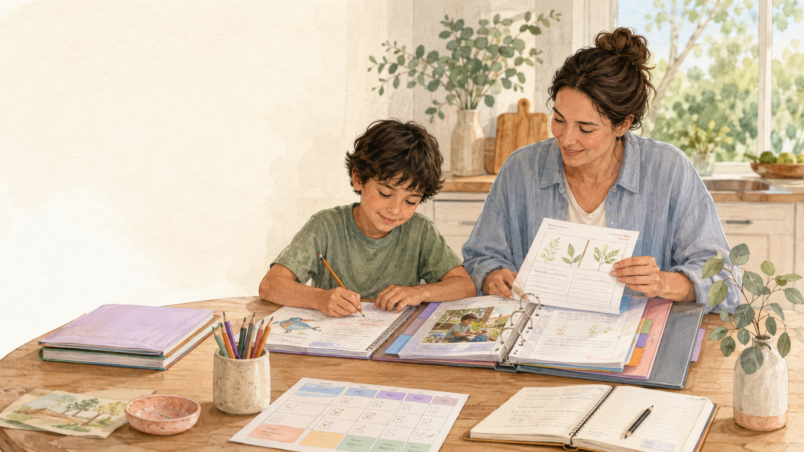
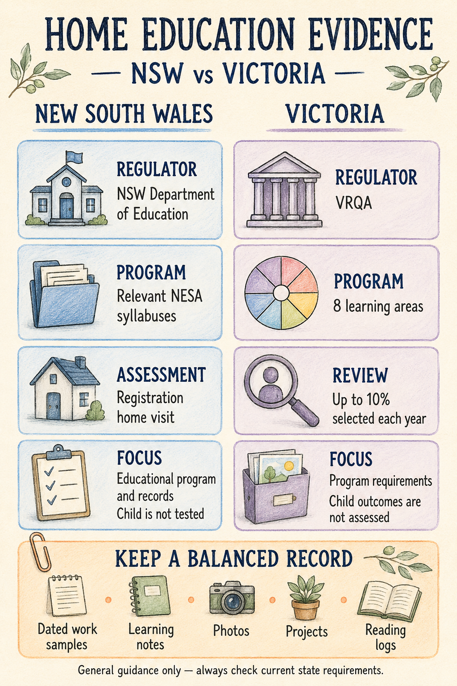

Parents · Home Education · NSW & Victoria
Home Education Evidence in NSW & Victoria: What Should You Keep?
A practical guide to keeping completed worksheets, learning notes, photographs and projects without turning your home into a filing cabinet.

Does all of this actually count?
If you have a folder full of your child’s worksheets, notebook pages and projects, you may have wondered whether all of it counts as home education evidence.
The simple answer is yes—completed worksheets and other work samples can form part of your records. But you do not need to keep every page your child completes.
A useful home education record is less about creating a huge filing cabinet and more about keeping a clear snapshot of what your child has been learning, how the learning happened and how they are progressing over time.
That might include worksheets, but it can also include photographs, projects, reading logs, notebook work, parent observations and short learning notes.
Important: This article provides general educational information, not legal advice. Requirements can change, so always check the current NSW Department of Education home-schooling guidance or VRQA guidance before applying or preparing for a review.
Do worksheets count as home education evidence?
Yes, completed worksheets can be useful evidence of learning. A dated maths worksheet might show the skill your child was practising, their completed answers, corrections or feedback, and progress compared with earlier work.
But a worksheet does not always show the whole learning experience.
Imagine your child uses real Australian coins to practise making different amounts before completing a money worksheet.
If you keep only the worksheet, someone can see the answers. If you add a short note such as:
12 August — Used Australian coins to make different totals first. Completed the worksheet independently afterwards.
you have captured much more of the learning. That is why context matters.
What counts as evidence of learning?
Evidence does not have to look like formal schoolwork.
Completed worksheets, notebook pages, maths working, writing samples, drafts and final pieces.
Photographs of science experiments, cooking, construction, gardening or art projects.
Reading logs, book lists, short notes about oral explanations or important conversations.
Screenshots of digital projects, excursion notes, presentations and other learning experiences.
Choose examples that help show the educational program being planned, delivered and developed over time. The aim is not to prove that every minute of the day was educational.
NSW and Victoria at a glance
The two states have different regulators and program frameworks.
| Aspect | New South Wales | Victoria |
|---|---|---|
| Regulator | NSW Department of Education | VRQA |
| Program framework | Relevant NESA syllabuses | Eight required learning areas |
| Assessment or review | Registration applications are assessed through a home visit | Up to 10% of registrations may be selected for review each year |
| What is reviewed | The educational program and relevant records; the child is not tested | Whether the program meets registration requirements; the child’s learning outcomes are not assessed |

Make a worksheet more useful with one small note
You do not need to write a report beside every worksheet.
- Date: When was it completed?
- Learning area: Mathematics, English, Science and so on.
- Learning intention: What was your child learning or practising?
- Observation: Was it independent, supported or challenging?
- Next step: What will you practise next?
For example:
Fractions — independently identified halves and quarters. Needed help comparing two fractions. We will practise this again next week.
That takes less than a minute to write but gives the worksheet useful context.
Home education records in NSW
Responsibility for regulating home schooling transferred from NESA to the NSW Department of Education in May 2025.
Home education programs are still based on the relevant NESA syllabuses.
For primary-aged children, the required curriculum covers six key learning areas:
- English
- Mathematics
- Science and Technology
- Human Society and Its Environment (HSIE)
- Creative Arts
- Personal Development, Health and Physical Education (PDHPE)
NSW families need an appropriate system for planning and recording teaching and learning experiences, as well as recording the child’s progress and achievement. Records might include work samples, annotated photographs, journal entries, digital evidence or other examples showing how the educational program has been implemented.
What happens during a NSW home visit?
Applications are assessed through a home visit. An Authorised Person reviews the educational program and relevant records. For renewal applications, previous learning records can help show how the program has been implemented and how the child has progressed.
The home visit is not a test of the child. The focus is the educational program and whether the registration requirements are being met.
Rather than trying to prepare a perfect folder, concentrate on being able to explain:
- what your child has been learning
- how you teach or support that learning
- how the program connects with the relevant syllabus
- how you record progress
- what you plan to teach next
Home education evidence in Victoria
Home education is regulated by the VRQA, and each child’s registration application requires a learning plan.
The educational program must provide regular and efficient instruction and, taken as a whole, substantially address eight learning areas:
- English
- Mathematics
- Science
- Humanities and Social Sciences
- the Arts
- Languages
- Health and Physical Education
- Technologies
Victoria does not require families to follow the Victorian Curriculum exactly. Families decide what content to include, provided the registration requirements are met.
What happens during a Victorian home education review?
The VRQA selects up to 10% of registrations for review each year and can also conduct a specific review where concerns arise.
The review is about the educational program, not testing your child.
Evidence may include reports describing learning activities, parent reflections or journal entries, work samples, photographs, extracts from apps or digital learning records, and weekly or monthly records.
VRQA guidance gives a useful example of how a visit to an aquarium might involve Science, English, Humanities or the Arts depending on what the child reads, discusses, writes or creates around the experience. Home education does not need to look exactly like a school timetable.
Do you need to keep every worksheet?
No. More paperwork does not automatically mean better evidence.
Instead of keeping 50 nearly identical maths pages, you might keep:
- an early sample showing the skill being introduced
- another showing practice or feedback
- a later sample showing improvement
Now the collection tells a story of progress. The same principle can work for handwriting, spelling, reading comprehension, writing and other learning areas.
A simple way to organise home education records
Your system does not need to be complicated.
- Organise by learning area. Create a section for English, Mathematics, Science and your other learning areas.
- Add useful samples as you go. Keep representative examples rather than every activity.
- Add short notes when context is helpful. A sentence or two is usually enough.
- Include different kinds of learning. Add projects, photos, practical learning and other experiences too.
- Review your records occasionally. Look for progress, missing learning areas, unnecessary repetition and useful next steps.
Record keeping can then help with future planning, rather than simply becoming paperwork.
What about AI-created worksheets?
AI is making it much easier to create learning materials, but the same basic rule still applies: the resource needs to be accurate, appropriate and educationally useful.
Before using an AI-assisted worksheet, check:
- questions and answers
- instructions and difficulty level
- Australian spelling and terminology
- curriculum or syllabus alignment
- whether the task supports the intended learning
The worksheet itself is only the resource. Your evidence should show your child’s learning—their responses, corrections, working, explanation or progress. Whether a worksheet was created with AI, purchased online or printed from a free website matters less than what the child actually did with it.
A quick home education evidence checklist
- Is it dated?
- Is the learning area or skill clear?
- Does it show something useful about my child’s learning?
- Would one short note add useful context?
- Does it help show progress?
- Am I keeping different kinds of evidence rather than only worksheets?
You do not need a perfect portfolio. You need a record that honestly shows what your child has been learning and how your educational program is being put into practice.
Explore free Australian worksheets
If printable activities form part of your home-learning program, explore the free Foundation to Year 6 Maths, English, Reading, Writing and Science resources available from Aussie Primary Academy.
A worksheet can be useful for introducing a skill, practising it, checking understanding or recording progress. Use the resource in a way that suits your child and, where helpful, add the completed work and a short learning note to your records.
Final thoughts
Home education evidence does not need to fill an entire filing cabinet. A few carefully chosen samples can tell a much clearer story than hundreds of pages kept without context.
Keep the work that shows something useful. Add a date. Add a short note when you need one. Include practical and creative learning as well as written work.
Over time, those small records can build a clear picture of what your child has learned, how they have progressed and how your home education program has developed.
Last fact-checked: 24 August 2026. Home education policies and registration requirements can change. Always confirm current information with the NSW Department of Education or VRQA.
Frequently Asked Questions
Are worksheets enough for home education evidence?
Worksheets can form part of your records, but a broader collection usually gives a clearer picture. Consider combining them with photographs, projects, notebook work, reading records and parent observations.
Does every worksheet need a curriculum code?
No. A curriculum or syllabus reference can be helpful, but the code itself does not demonstrate learning. The activity, the child’s work and the surrounding context matter more.
How much home education evidence should I keep?
There is no need to keep every activity. Aim for representative samples that show a range of learning experiences and development over time.
Will my child be tested during a NSW home visit?
No. The Authorised Person reviews the educational program and relevant records. The focus is on the registration requirements, not testing the child.
Is my child tested during a Victorian home education review?
No. The VRQA reviews whether the educational program meets registration requirements rather than assessing the child or their learning outcomes.
Do Victorian home educators have to follow the Victorian Curriculum?
No. The program needs to substantially address the eight required learning areas, but families can decide what content to teach and do not have to follow a particular curriculum.
Keep learning
Explore more free Australian primary worksheets and practical parent guides from Foundation to Year 6.